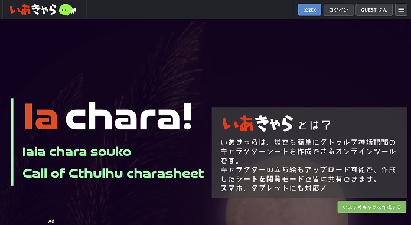
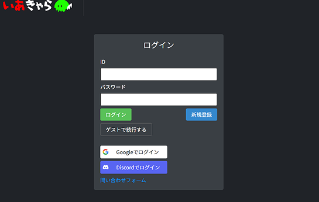
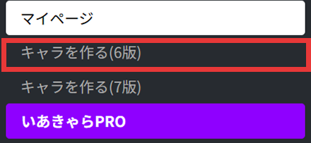
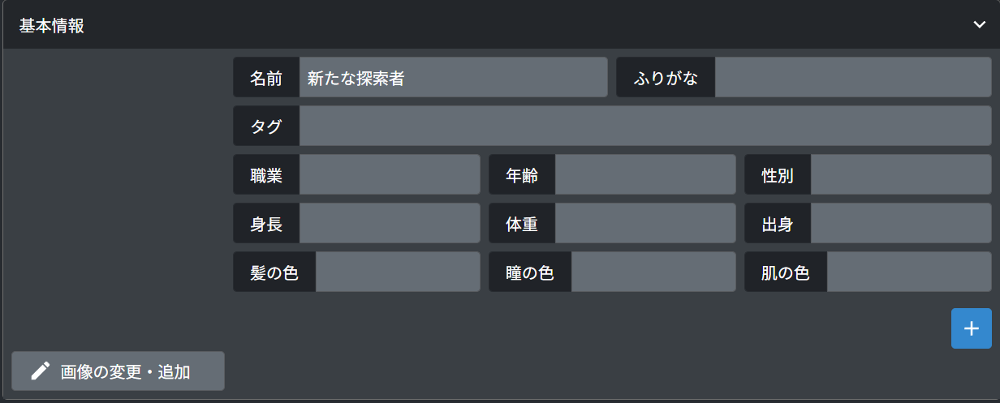
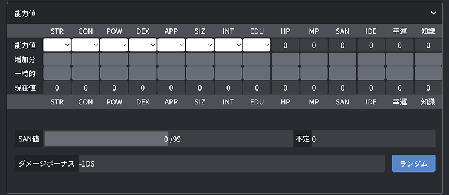
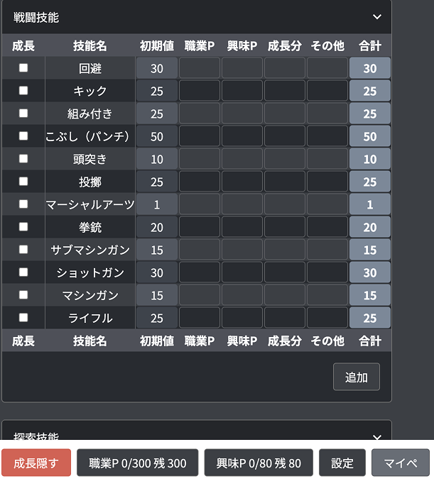

✦ いあきゃらをはじめよう ✦
探索者を作成するにあたって、いろいろ決めないといけません。
そこで便利なサイト「いあきゃら」を使って作成します。

サイト：いあきゃら
ログインのところから、新規登録か、ログインを行う

マイページにいけたら、キャラを作ろう

サイト：いあきゃら
今回は「キャラを作る（6版）」を選ぼう！
マイページにいけたら、キャラを作ろう!
✦ 基本情報の決め方✦
シナリオには、その世界観にあったPCを作成する必要がある。
シナリオによっては、HOといった役割が配られることもある。
それらを参考に作ってみよう。
KPの指示を聞いたり、概要欄をみてキャラクターを作成しよう。
ここでは基本情報で決めることとちょっとした説明をします。
基本情報で絶対決めて欲しいことは、赤文字で表示します。 好きな順番で決めていってください！

サイト：いあきゃら
決めたことはここに入力していくよ
画像：
立ち絵をきめたらここに表示ができるよ。決めても決めなくても〇
もし簡単に決めたいなら、「picrew」を使うと簡単につくることができるのでおすすめ！
名前：
ふりがなとかも書いてくれると助かるやつ
タグ：
自分の作ったキャラクターを検索するときに使える。
職業：
職業はこのあと技能決めに影響するため決めましょう。 シナリオによって指定があったりするので、KPに確認しましょう！
年齢：
決めなくてもどうにかはなる。
決めて欲しいといわれることが多い気がする。
キャラクターによっても「？」で記載するのもありかもしれない
性別：
男、女、中性、無性、、KPにだめと言われない限り、好きに書いてもいいと思う。個性。
身長：
書いてあると、他のキャラクターとの比較ができたりするから、盛り上がる。
この後決めるステータスのSIZによって変えてもよし。
体重：
この後決めるステータスのSIZによって変えてもよし。
出身：
日本かどうかとか書いておくとよい。
技能の母国語が変わったりするので、書いとくといいかも？
髪色：
髪色。好きに書こう。個性。
瞳色：
瞳色。好きに書こう。個性。
肌色：
肌色。好きに書こう。個性。
✦ ステータス設定✦
探索者の持っているステータスを決めよう。
力や頭の良さなどが決められます。
強すぎても不利になることがあったり、つまらなくなるので、気をつけてね。
ここではどんなものがあるのか、どれくらいが平均なのかを説明しています。
ここでは、能力値から、数値を選ぶか、右下のランダムボタンを押すと、数値が出力されます。
現在値に全て数値が入っていれば、まるです。

サイト：いあきゃら
ステータス
✦ 基本ステータス ✦
STR：
筋力を表す。数値が高いほど、力が強い。
ダメージボーナスにも影響する数値。
CON：
健康や頑強さを表す。数値が高いほど、耐久力があり、毒や病気にも耐えられる。
HPにも影響する数値。
POW：
思の力、心、そして精神的安定性を合わせたものを表す。数値が高いほど、メンタルが強い。
また、SAN値やMP、幸運の技能にも影響する数値。
DEX：
足の速さと手の器用さを表す。数値が高いほど、自分の肉体を自在に動かせる。
回避技能にも影響する数値。
APP：
顔の良さを表す。高いほど、人を魅了する。
SIZ：
身長や体重を表す。高いほど、体が大きい。
HPやダメージボーナスにも影響する数値。
INT：
頭の良さ。閃き。高いほど、論理と直感を飛躍させる能力が高い。
アイデアにも影響する数値。
EDU：
教育をどのくらい受けてきたのか。高いほど、物事を知っている。
年齢や知識にも影響する数値。
✦ ステータスによって変わる数値 ✦
HP：
耐久値。CONとSIZの値で変わる。
敵から攻撃を受けたりすると減っていく。
０になると死ぬ。ロストとなる
MP：
マジックポイント。POWの値と同じ
呪文を使うときや魔術的な効力を発揮する時に消費される。
０になると、気絶する。
SAN：
正気度。POWの値で決まる。
一気に減ったりすると発狂する。
０になると植物人間のようになり、ロストとなる
アイデア：
アイデア。INTの値で決まる。
成功すると、物事を思い出したりすることができる
幸運：
運。POWの値で決まる。
知識：
知識。
EDUの値で決まる。
知識があるかどうかの時に判定する。
DB：
ダメージボーナスのこと。何かに攻撃する時に、ダメージにプラスやマイナスになったりする。
STRとSIZの値によって決まる。
✦ 技能設定 ✦
技能とは、行動する時に、その行動がうまくいくかどうかをダイスで判定する時にどのくらいの確率で成功するかどうかを判断する数字
例：
ドアの向こう側で誰かが話している。
→技能値70％の「聞き耳」の技能を振ります。
→100面ダイスを振って、70以下が出たら、成功
→話の内容を聞くことができる。
✦ 技能の割り振り ✦
割り振るには、「職業ポイント」と「興味ポイント」にポイントが分かれます。
それぞれのポイントがなくなるまで、ポイントが割り振れる。

技能
初期値：
ポイントを割り振らなくても、もともと持っている技能値
ステータスによって数字がかわるものもあるが、基本同じ数字。
合計値が技能の数字となる。
職業ポイント：
EDU×20 の値が職業ポイントとなる。
基本８つほど技能に割り振る。
職業によって割り振れる技能が違うため、ルルブを確認するのがおすすめ
学生の場合は将来の夢などにそって技能をとったりする。
興味ポイント：
INT×10 の値が興味ポイントとなる。
自由に割り振ることができる。
探索者の個性にそって取ると楽しい
合計：
全て合算した値が技能値となる。
✦ その他の技能欄 ✦
成長：
クリティカルやファンブルをすると成長判定が行える。
セッション終了後に行うことが多いため、ここにチェックをいれることで、メモとして残しておくことができる。
成長分：
成長後に、書くところ。
ハウスルールにもよるけれど、終了後、技能の成長判定を行い、成長した分をここに記入。
継続に行く場合、成長した技能値となる。
その他：
シナリオに補正がある場合、ここに書くことが多い。
✦ その他 ✦
他！シナリオやKPに書いて欲しいと言われたことを書いたり、
自由に個性を出したりできるメモ欄
戦闘・武器・防具：
武器を持っていく場合は必ずKPに許可をもらってから書きましょう！
書く内容はルルブに書いてあるのでそこを参照しましょう。
所持品・所持金：
所持品は書いとくとセッション中に思わぬ役に立つことも。
思い出の品とか書いているとエモい
新たに得た知識・経験：
ここはセッション終わったあとに書くところ。
通過したシナリオを書いておくと〇
メモ：
好きに書こう
メモ欄を追加できたり、パスワードを設定できたりする
✦ サンプル ✦
実際どのように振る分けているのかのサンプルを置いておきます。
ネタバレは、「新たに得た経験・知識」の欄のみとなっています。そこだけ注意してください。